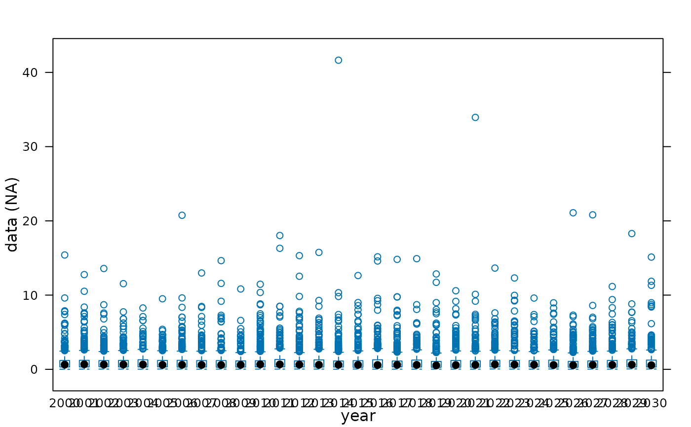

Generates a time series of possible bias-corrected lognormal autocorrelated random values
Source:R/oem.R
ar1rlnorm.RdThorston, 2020.
References
Thorson, J. T. Predicting recruitment density dependence and intrinsic growth rate for all fishes worldwide using a data-integrated life-history model. Fish Fish. 2020; 21: 237– 251. https://doi-org.ezproxy.library.wur.nl/10.1111/faf.12427
Examples
devs <- ar1rlnorm(rho=0.6, years=2000:2030, iter=500, meanlog=0, sdlog=1)
plot(devs)
